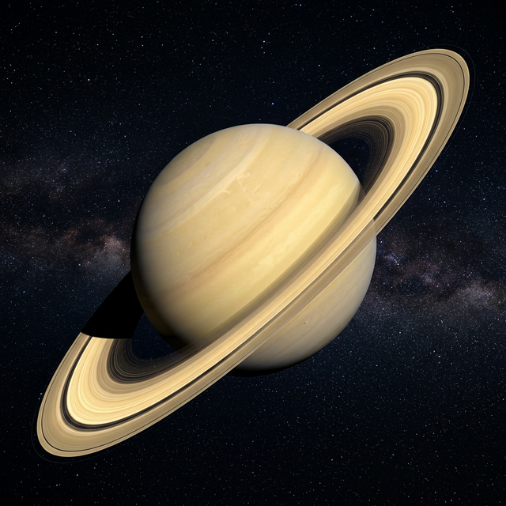

Saturn
The Ringed Wonder – Solar System's Crown Jewel
Saturn is the sixth planet from the Sun and the second largest in the Solar System. It is instantly recognisable by its magnificent ring system, made of ice and rock. Like Jupiter, Saturn is a gas giant — it is so light that it would float on water. Saturn has 146 known moons, including Titan, which has a thick atmosphere and lakes of liquid methane, making it one of the most intriguing worlds in the Solar System.
| Property | Value |
|---|---|
| Diameter | 116,460 km |
| Distance from Sun | 1.43 billion km |
| Orbital Period | 29.5 Earth years |
| Day Length | 10.7 hours |
| Cloud Top Temp. | -139°C |
| Moons | 146 |
| Type | Gas Giant |
Fascinating Facts
- 💍 Saturn's rings span up to 282,000 km but are incredibly thin — mostly less than 1 km thick.
- 🌊 Saturn is the least dense planet — it would actually float in a giant bathtub of water.
- 🌑 Titan, Saturn's largest moon, has rivers, lakes, and rain — all made of liquid methane.
- 🌪️ At Saturn's north pole lies a hexagonal storm bigger than Earth.
- 🔭 Saturn's rings were first observed by Galileo in 1610, though he thought they were "ears."